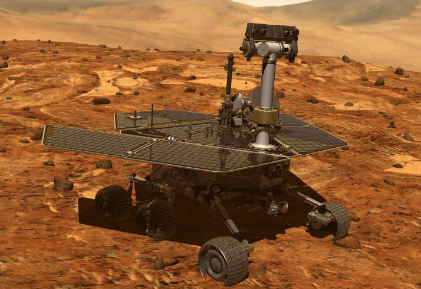
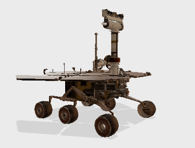

Spirit & Opportunity
The twin explorers

Two identical robot geologists landed on opposite sides of Mars in 2004. Their job: find out if Mars once had water.
Scroll to explore ↓
Choose your rover
Silent for:
Who drove farther?
The white line is a marathon (42.2 km). Press the button and watch.
Opportunity was the first human-made vehicle to travel a marathon distance on another world. It also outlived its plan by about 60 times.
Their story, in order
Two worlds apart: landing sites
A simple flat map of Mars. Positions are approximate. The two sites are on opposite sides of the planet.
Tap a dot
See where each rover landed.
Landing: Spirit’s bouncy arrival
A parachute slowed it, a heat shield protected it, retrorockets cut its speed, and four airbags cushioned the landing. Spirit bounced 28 times before stopping. Try it:
Bounces: 0
Big discoveries: tap a card
Opportunity: the long-distance explorer
Opportunity was built for a short primary mission. Instead it worked for almost 15 years. Follow its trail:
Planned life vs real life
The dust storm: drag the slider
In June 2018, a planet-wide dust storm covered Opportunity’s location. This is a simple illustration of what happens to a solar-powered rover.
Sunlight reaching the panels: 100% · Clear sky. The rover is working.
Science tools

Each rover weighed about 185 kg. The whole spacecraft at launch, with landing gear, weighed 1,062 kg.
Meet the rover: tap the dots
Tap a dot
Each dot shows a part of the rover.
Why they matter: three rovers, one story
Sojourner, Spirit and Opportunity each pushed farther than planned. Compare them:
Each one went farther than anyone expected.
Together they show that new ideas, patience and curiosity can reveal the history of another world.